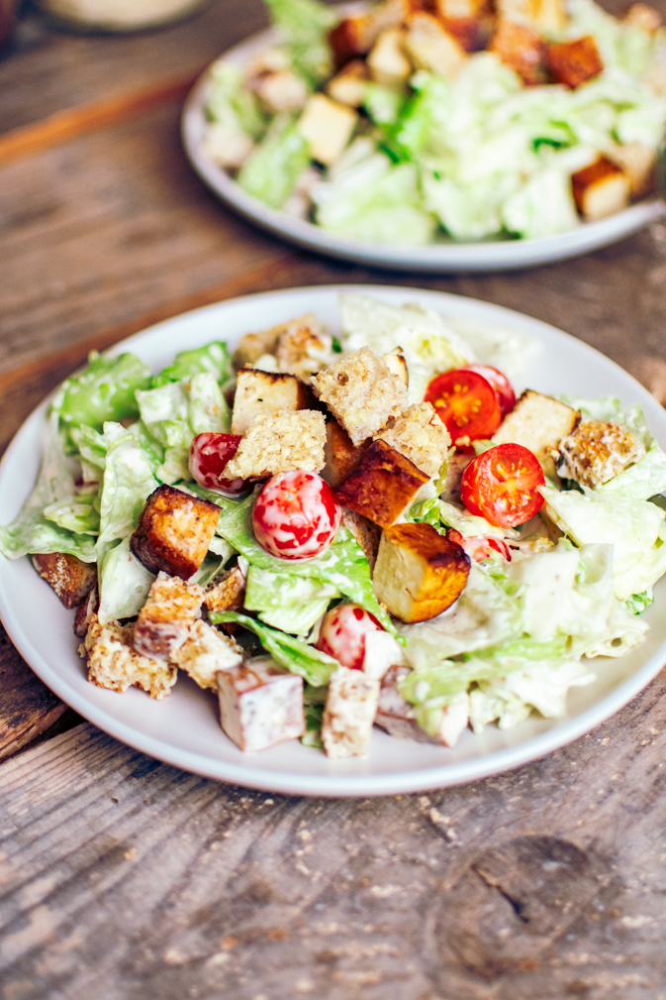

Caesari Salat

| Koostisosad |
Kogus |
| Rooma salat |
1 kera |
| Ciabatta |
3tk |
| Sool |
Maitse järgi |
| Küüslauguküüs |
1 tk |
| Kanafilee |
2 tk |
| Parmesanilaastud |
1 peotäis |
| Felixi küüslaugukaste |
5 spl |
| Sidrunimahl |
0.5 tl |
| Majonees |
4 spl |
| Riivitud parmsan |
3 spl |
- Samm
Eemalda rooma salatitelt välimised ja katkised lehed ning pese salatilehed puhtaks. Kuivata hoolega. Rebi salatilehed väiksemateks tükkideks ning aseta suurele vaagnale või salatikaussi.
- Samm
Valmista küüslaugukrutoonid. Lõika ciabatta vms nisuleib paksudeks viiludeks. Edasi on kaks varianti. Kui ahi sees on, siis rebi saiaviilud tükkideks, nirista peale oliiviõli ning puista hakitud küüslauku peale. Küpseta ahjus krõbedaks, lase jahtuda. Kui ahju (sees) ei ole, siis prae saiaviilud kuumal pannil õlis kuldseks. Hõõru veidi jahtunud leivaviilud poolitatud küüslauguga üle. Lõika või murra väiksemateks tükkideks.
- Samm
Valmista salatikaste. Selleks haki küüslauk ja anšoovisefilee hästi peeneks (või peenesta uhmris). Lisa toores munarebu või majonees, Dijoni sinep, sidrunimahl ja Worcesteri kaste ning vispelda kaste ühtlaseks. Nirista vähehaaval juurde oliiviõli, kastet vispliga segades. Maitsesta soola ja pipraga.
- Samm
Kalla kastet salatilehtedele, puista peale riivitud parmesan ning sega salatilehed kastmega läbi. Lisa salatile küüslaugukrutoonid ja serveeri.